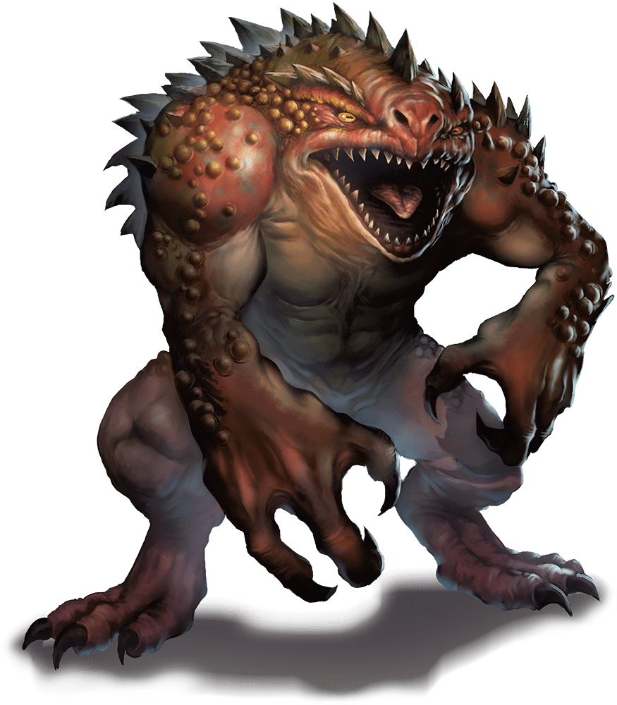
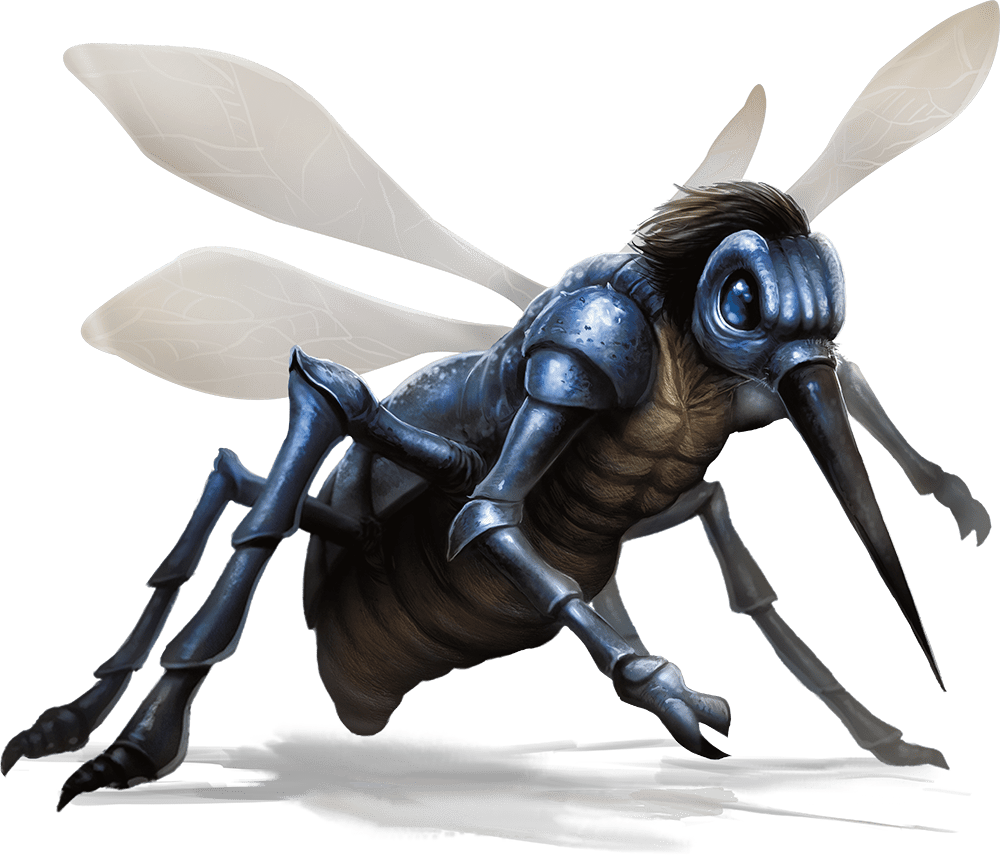

Fifteenth Session
A Plague of Demons
Dramatis Personae
- Actias Aureus, a 6th-level Tiefling Warlock
- Benjamin, an 8th-level Wood Elf Ranger
- Calmul Rhoqiroth, an 8th-level Dragonborn Artificer
- CoralKing, a 7th-level Gnome Monk
- Geral Bryn, an 8th-level Human Fighter
- Orky, a 7th-level Half-Elf Paladin
- Steve, an 8th-level Halfling Rogue
- Tasbros, an 8th-level Sky Elf Sorcerer
- Tysnera, an 8th-level Sky Elf Wizard
- Viker, an 8th-level Eladrin Druid
- Wulrif, a 7th-level Human Warlock
Summerday +492 hours

From the journal of Dame Orky
Round 5 – I get 4 HP
- Wulrif critically hit the emerging creature using Eldritch Blast which pushes him back 10 ft and deals 10 hp damage. The shamans also slink backward. The creature rushes out the front gate at Wulrif. Calmul does 6 damage on something?
- Steve shoots at the creature with his crossbow but misses.
- Geral hits the Ogre that’s in front of him. He does 6 HP damage.
- Some magic spears now start circling around Wulrif and he dodges all of them.
- I hit the frog creature for 27 damage.
- Tasbros uses ray of frost on the frog and does 5 damage.
- Calmul shoots the creature and it appears to do no damage.
- CoralKing actively dodges
- The Ogre in close proximity misses an attack. 2 others move in on CoralKing. 6 Ogres run into the chapel. A bunch of others run out the front gate. They hit Geral for 15 HP damage.
- Viker uses her ray of disruption on the frog creature. She then Teleports out.
- Tysnera uses her Fireball in a pile of creatures inside the northwest center of the courtyard. She hit 5 Ogres that made their saves and get hit 15 HP each. It takes out
- Benjamin finds the creature is a Fiend and is resistant to magic, Cold, Fire, Lightning; Bludgeoning, Piercing, and Slashing from non-magical attacks; and immune to poison.
- Actias attacks the frog creature twice and does 17 + 16 radiant damage.
- All of the Orcs sprint into the cathedral, except the ones in the turrets.
Round 6 – I get 4 HP
- Wulrif makes his saving throw for poisoning. He hits the frog creature for 6 HP damage.
- Steve is not hidden from the frog creature, unknowingly. He shoots at the Ogre behind me and does 22 damage.
- The creature attacks Wulrif for 16 HP.
- Geral uses his sword to attack the Ogre in front of him. He does 18 damage and kills it!
- Wulrif gets hit by 2 of the magic spears.
- I do 60 HP damage on the Fiend and it disappears.
- Tasbros uses ray of frost on the Ogre and does 18 damage.
- Calmul hits a crit on the Ogre and does 28 damage. He is knocked prone.
- CoralKing strikes the Ogre in front of him for 20 HP damage.
- The Ogres attack our friends and I hit one for 17 damage on an opportunity of attack. Wulrif cracks one of the Ogres for 6 HP damage too. One of them attacks me for 9 HP damage.
- Viker hits an Ogre for 18 damage and Teleports away
- Tysnera uses her Magic Missile wand on the 3 Ogres in front of her and the boys. She does 8 HP damage each.
- Benjamin takes out one of the Ogres and does 12 HP damage on another one.
- Actias hits one of the Ogres for 31 HP damage total.
Round 7 – I get 4 HP
- Wulrif disengages and holds his action.
- Steve hits one of the Ogres for 20 HP damage.
- Geral hits the Ogre in front of him again for 11 HP damage.
- 4 spears attack Wulrif for 22 HP damage.
- I take out the 2 other Ogres in front of the gate.
- Tasbros casts a level 3 Fireball and it fails.
- Calmul moves
- CoralKing attacks the Ogre in front of him and does 19 HP damage.
- The Ogres in front of the boys attack both of them and hits Geral for 25 and CoralKing for 13 HP damage.
- Viker uses cure wounds to heal Wulrif for 25 HP.
- Tysnera does 12 damage to one Ogre and takes it down.
- Benjamin is going to use hail of thorns on an Ogre by the boys. He does 21HP damage?
- Actias moves closer to the wall and hits for 7 HP damage using an Eldritch Blast.
- The 2 remaining Ogres turn to run into the cathedral. CoralKing hits one for 6 HP on their way. As the last one disappeared, the spears attacking Wulrif disappeared too.
We spend the shadowspawn into the cathedral and it dissipates. Actias uses arcana to see if he can discern anything about the darkness. He doesn’t do well and sees that its magical darkness. The darkness seems to bulge out of the cathedral and a voice says “congrats, you got rid of some of my servants.” We say we are only there for the rock. He said “well, we have uses for that rock. However, there are other magic things you can earn.” This cathedral doesn’t seem to be consecrated and that’s the opposite of how a cathedral should be. It’s not keeping Undead away and etc.
I use divine sense and I can sense that there were 4 Fiends, and now there are 5. Clearly the ward stone has been reversed and is useless to us in its current state. So, we ask about the swords and the voice tells us 1 is a rod and is in an ancient dwarven fortress overrun by Undead. Another sword is in a burial mound. A woodland staff in the shape of a tree is in the depths of the forest. A pair of gloves is in the bowels of Neverwinter.

15,000 XP
We see a little girl with black hair and she asks us “so, are you going to take the offer from the demon?” We say no, she tells us the weapons are probably cursed. She tells us her people are trapped in there with her. Her name is Chiyo and said her people were misled by promises and told lies. She tells us they are summoning more creatures every cycle, there are 5 in there currently. There are shadow demons, Glabrezu which is the main one talking to us. 2 beasts (Hezrous), 2 Chasmes, and 4 Shadow Demons, and 4 corrupted shamans. She said if we go in to attack them, her people will attack them from behind. Her mate is the leader, the one we talked to first. He is being coerced by the shamans. She estimates we are outnumbered. We learn that Glabrezu emits darkness at will. Wulrif attempts to read her mind and fails. She shows us her true form, as an Oni, which are lawful. The ward stone is under the altar, using an active gate to call their own kind, Fiends.
Actias is lighting up his sun blade, we take formation and move into the courtyard. We don’t see anything yet.
Round 1
- Steve hides and holds his action
- CoralKing holds his action
- This giant, deafeningly loud, bug flies toward us and Actias and Wulrif both fall unconscious. The proboscis enters Actias and he drops the sun blade. He loses 30 HP and decreases his maximum HP by 30. It’s draining his blood. They are both unconscious for 10 minutes.

- Wulrif is unconscious
- Now the Glabrezu charges forward toward Geral and misses an attack. Now the shamans attack Geral with magic spears and do 11 HP damage.
- I cast Thunderous Smite and hits the giant bug twice for 40 HP of damage.
- CoralKing hits it for 22 HP damage and uses Stunning Strike and fails.
- Geral has CoralKing hit the creature again and he misses.
- Calmul casts heroism on me and uses Arc Angel to shoot something, dealing 5 HP damage.
- Tasbros uses ray of frost on the bug and does double damage, killing it!
- Everyone in the front: CoralKing, Geral, Benjamin, Viker, and I makes saving throws. Everyone made it!
- Viker casts moonbeam on the frog creature and it blinks away. It still takes half damage, 8 HP.
- Benjamin casts hail of thorns and does damage
- Tysnera casts banishment and the creature disappears!
- We all make our wisdom saving throws! But it attacks us 3 times, hitting me with 20 HP.
Round 2 – I get 4 HP
- Steve
- CoralKing does 20 HP damage
- We hear scuffles in the darkness.
- I use Vow of Enmity and attack the fat winged Fiend once for 20 HP.
- Geral asks me to hit it again and I does 32 damage.
- Tasbros uses Confusion and it fails
- The Oni, which brought the bird Fiend down, finally delivers the killing blow to it.
- I am is stunned.
- Viker uses lightning bolt for 30 HP damage. She casts Daylight, 60 ft radius. Now, she enters the cathedral and sees the 4 shamans, the fat winged creature, the lobster goat creature, and the Oni and Ork who are fighting things in the back room. She moves her moonbeam onto the lobster goat creature and does 14 HP damage.
- Benjamin moves into the cathedral and shoots hail of thorns, which fails, doing 12 HP damage. Then, he shoots the fat winged creature and does 14 HP damage.
- Tysnera casts lightning bolt and does 19 HP damage to the fat winged creature. It does 37 HP damage to an Ork shaman, taking him out.
- The fat winged creature leaves the cathedral to attack Steve and Tasbros by the front gate. Tasbros is afraid and runs away, in his turn. It attacks Steve and does 24 HP damage.
Round 3 – I get 4 HP
- Steve stays hidden
- CoralKing shoots 2 darts at the fat winged creature and he does 5 HP damage.
- The shamans are fighting with the Oni and Ork and I need to make a saving throw. I make it and am no longer stunned.
- Geral tells the Oni to hit the lobster goat creature. She hits and does 19 HP damage. Then, Geral shoots his bow at it and misses.
- Calmul stabs the fat winged creature and does 9 HP damage.
- Tasbros is running away, frightened. He casts milf’s meteors on the fat winged creature, doing 3 HP damage.
- The Oni does 34 HP damage on her first hit and 19 HP on the second one. The Ork attacks the shaman with his Greataxe, twice. Viker’s moonbeam does 17 HP damage. The lobster goat creature does 8 HP damage to the Oni.
- Viker attempts to hit the fat winged creature but fails.
- Benjamin shoots at the lobster goat creature and misses.
- Tysnera casts lightning bolt. Calmul gets hit twice for 33 HP damage.
Round 4 – I get 4 HP
- Steve does 23 HP damage on the fat winged creature, taking it out!
- CoralKing runs closer to the lobster goat creature and dodges.
- The shamans hit the Ork but he's OK.
- I move, Teleport to the lobster goat, and hits it twice for 48 HP damage.
- Geral moves up and does 7 HP damage, I do 18 damage, exactly knocking it down.
- Calmul moves forward.
- Tasbros moves forward and holds his action
The Oni yells “wait!” and seems to heal herself. The Ork seems to imply the shamans are his friends and instructs the other Orcs to halt and not attack.
We ask for the stone and she agrees. Geral invites her to stay with us in our town through the winter and he said he will hire her and her people to protect the forge. The Oni instructs us to stay in the light so we don’t have to face the 4 shadow demons lurking in the dark. 3 shamans, 1 Ork chief, 16 Ogres (4 chain brutes), and 23 Orcs remain to work in the forge.